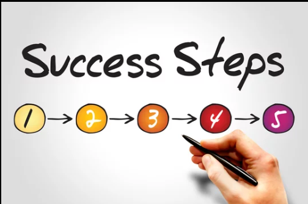
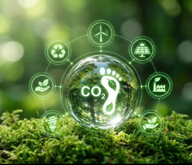

5 Steps to a Greener Office

Learn how small changes in lighting, waste handling, and energy controls can add up to a big impact for your business and budget.
Explore articles, quick guides, and practical tips to help your business adopt eco-friendly technology and lower its environmental footprint.

Learn how small changes in lighting, waste handling, and energy controls can add up to a big impact for your business and budget.

Understand which emissions data matter most for sustainability reporting and how to track progress without overwhelming your team.
Discover how intelligent waste systems can increase recycling rates and make it easier for employees to participate.
Downloadable planning tools, implementation checklists, and quick reference guides designed to help any business start their sustainability journey.